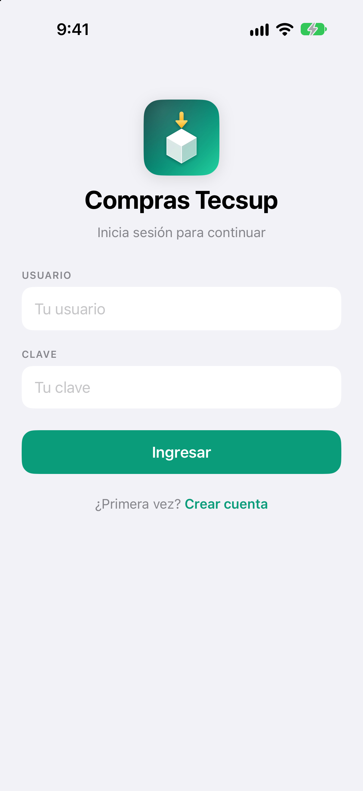
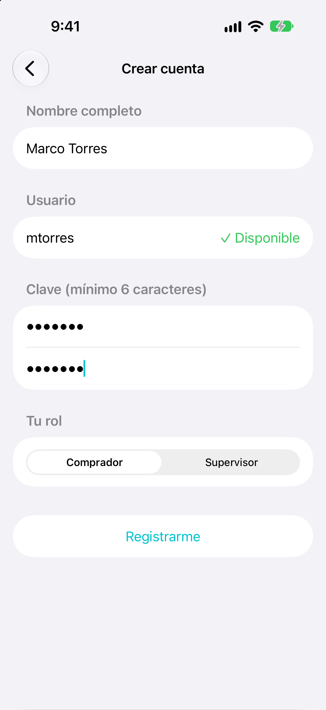
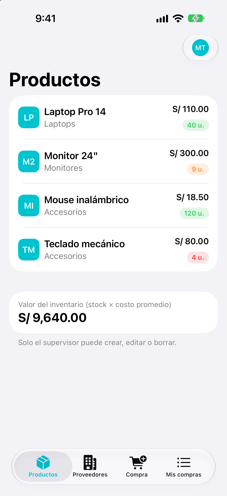
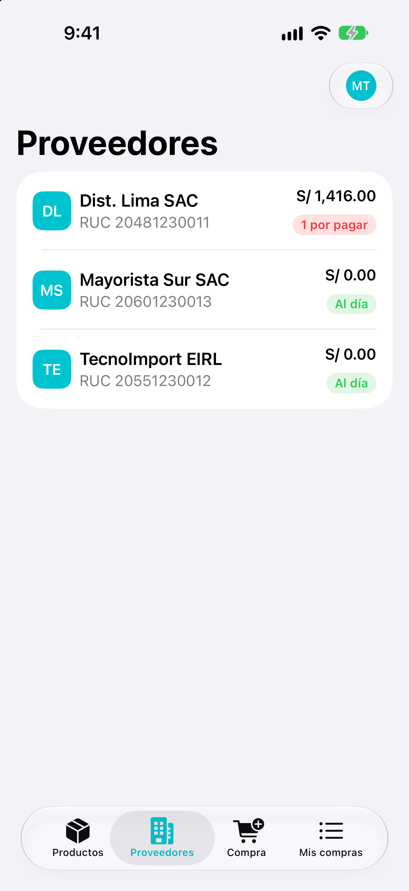
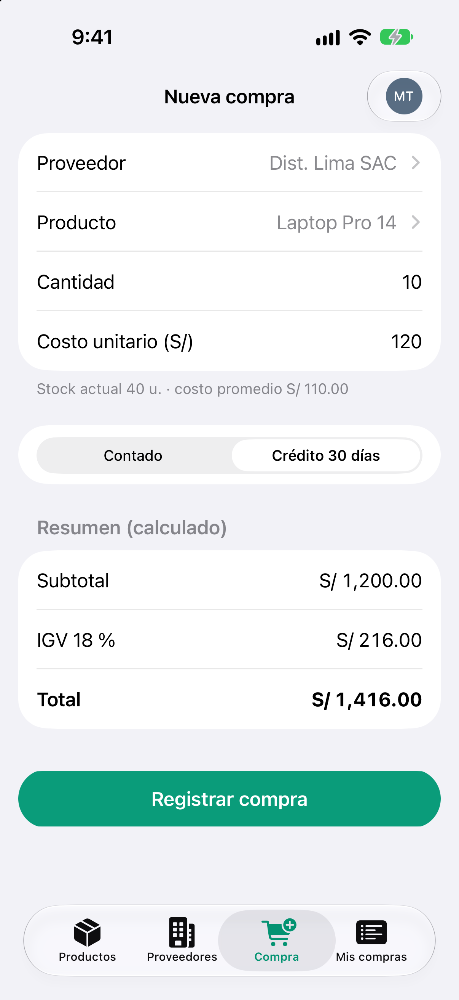

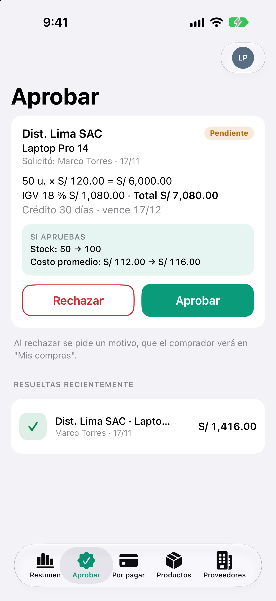
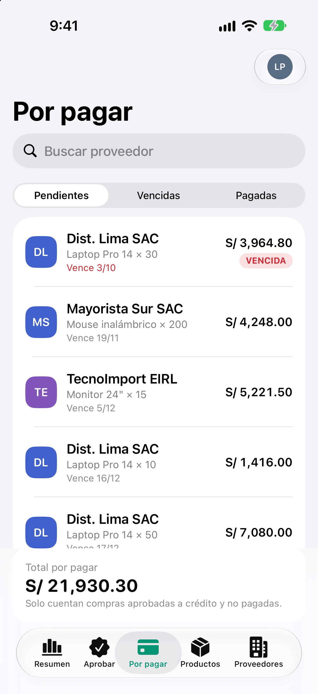
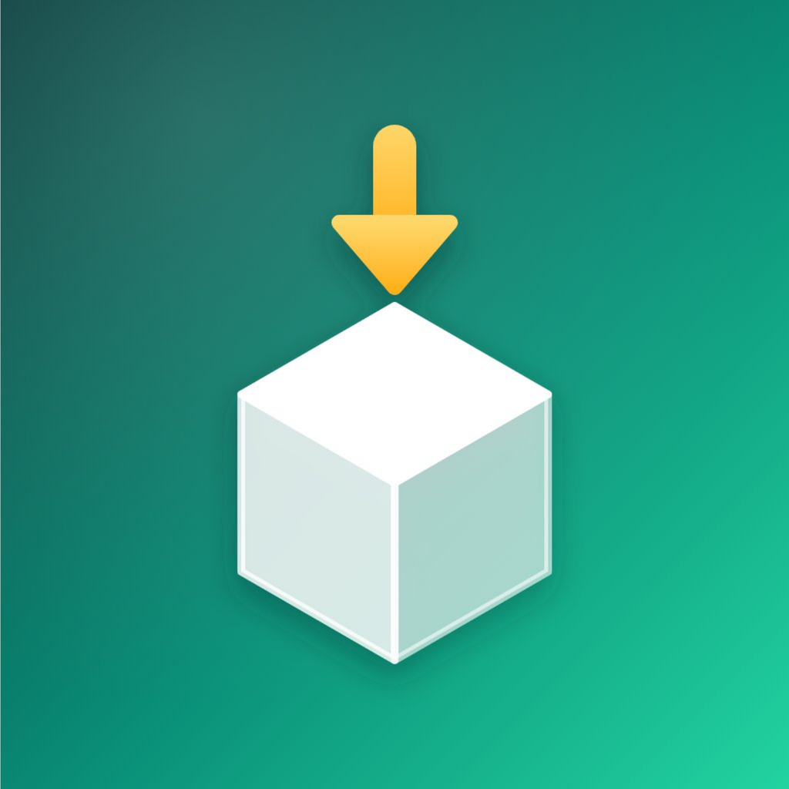
| Curso | Desarrollo de Aplicaciones Móviles Avanzado |
| Laboratorio | GLAB-S11 · Persistencia de datos (SwiftUI con SwiftData) |
| Caso | B · Compras con roles de Comprador y Supervisor |
| Alumno | Jason Gómez |
| Modalidad | Trabajo individual |
| Rama del repositorio | ai-assisted (con PROMPTS.md) y manual |
| Repositorio | github.com/JasonGomezzz/MovilesAvanzado_JasonGomez · carpeta Semana11/apple_lab11_B_Compras |
| Herramientas | Xcode 27.2 · Swift · SwiftUI · SwiftData · Swift Charts · iPhone 18 Pro (simulador) |
| Valor agregado | Resumen con tres gráficos de Swift Charts, vista previa del efecto antes de aprobar y tema visual propio |
Verificacion).Construir una app de compras para una empresa que vende tecnología: el comprador registra compras a proveedores y el supervisor las aprueba, rechaza o paga. Todo se guarda con SwiftData en un archivo SQLite, de modo que los datos permanecen al cerrar la app. La app tiene inicio de sesión, registro, dos roles con pestañas distintas y reglas de negocio que cambian el inventario y las cuentas por pagar.
Clase @Model | Atributos | Relaciones |
|---|---|---|
| Usuario | nombre, usuario (único, en minúsculas), clave, rol | compras (uno a muchos) · regla .deny |
| Proveedor | nombre, ruc (11 dígitos) | compras (uno a muchos) · regla .deny |
| Producto | nombre, categoría, stock, costoPromedio | compras (uno a muchos) · regla .deny |
| Compra | fecha, cantidad, costoUnitario, igv, total, alCredito, vence, estado, pagada, motivoRechazo | comprador, proveedor, producto (inversas) |
La regla .deny impide borrar un usuario, proveedor o producto que ya tiene compras: la app lo avisa con una alerta. Los valores calculados (total comprado y compras por pagar de un proveedor, valor del inventario de un producto) no se guardan; se derivan de las relaciones.
| Rol | Pestañas | Permisos |
|---|---|---|
| Comprador | Productos · Proveedores · Compra · Mis compras | Consulta y busca en el catálogo, registra compras y ve solo las suyas. No aprueba ni paga. |
| Supervisor | Resumen · Aprobar · Por pagar · Productos · Proveedores | Crea, edita y borra productos y proveedores; aprueba, rechaza y paga compras; ve el resumen del negocio. |
La cuenta de cada persona es un menú en el avatar de la barra superior: muestra nombre y rol, permite cerrar sesión y, al supervisor, cargar un historial de ejemplo. Los permisos se validan también en la lógica (ReglasCompra), no solo ocultando botones.
| Regla | Detalle |
|---|---|
| Usuario único | Se normaliza (minúsculas y sin espacios), así «MTorres» y «mtorres» son el mismo. Clave mínima de 6 caracteres y confirmación igual. |
| Login genérico | Si algo falla, siempre dice «Usuario o clave incorrectos»; nunca revela cuál de los dos falló. |
| Cálculo de la compra | subtotal = cantidad × costo unitario · IGV = 18 % del subtotal · total = subtotal + IGV, todo redondeado a céntimos. |
| Aprobación | Total menor a S/ 5,000: queda Aprobada al instante. Total de S/ 5,000 o más: queda Pendiente y no cambia stock ni costo hasta que el supervisor la apruebe. |
| Costo promedio ponderado | nuevo = (stock × costo promedio + cantidad × costo unitario) ÷ (stock + cantidad). El stock aumenta en la cantidad comprada. |
| Crédito a 30 días | La fecha de vencimiento es la fecha de la compra + 30 días. Queda «por pagar» hasta que el supervisor la paga. Al contado se marca pagada en el momento. |
| Rechazo | El motivo es obligatorio; el comprador lo ve en «Mis compras». No cambia stock ni costo. |
| Vencida | Compra aprobada a crédito, sin pagar, cuya fecha de vencimiento ya pasó: se marca con la insignia VENCIDA. |
| Crédito fiscal | Suma del IGV de las compras aprobadas (cifra del Resumen). |
Todas las pantallas del enunciado están implementadas. La imagen del ícono y el logo se tomaron del propio enunciado, como indicó el profesor.







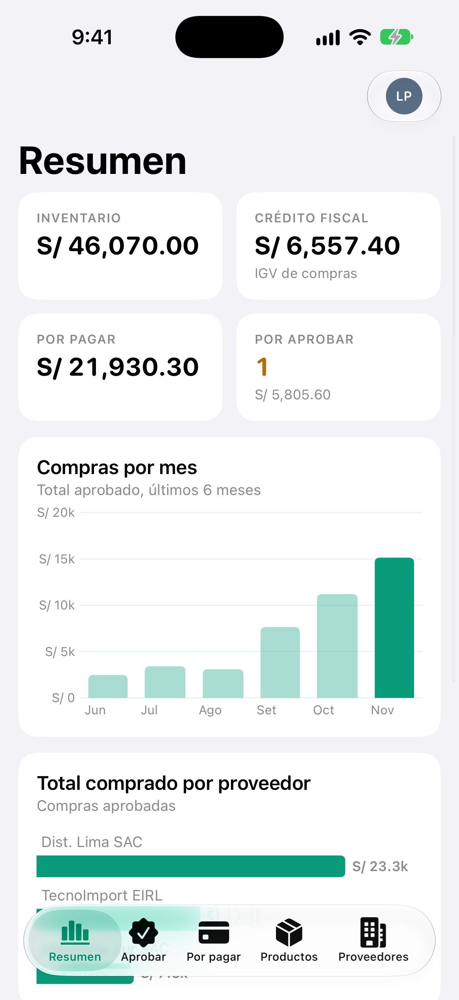
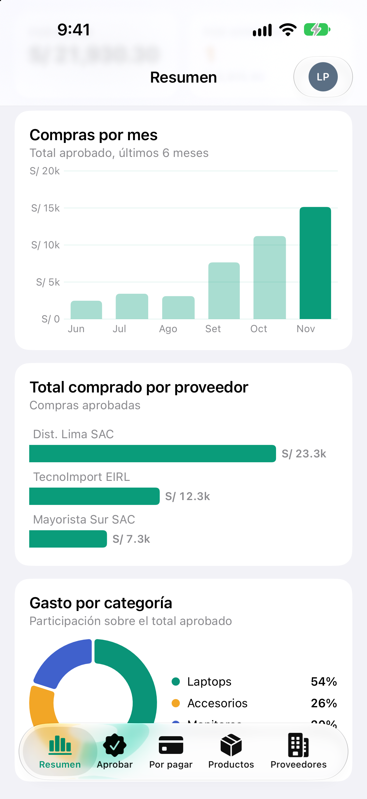
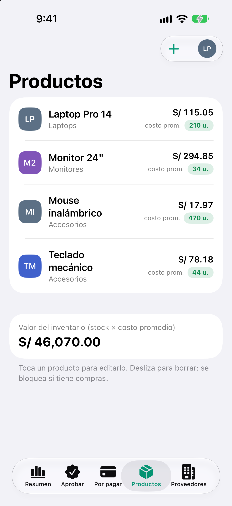
Cada caso se ejecutó en el simulador y, además, se comprueba con el verificador automático (Verificacion/ejecutar.sh), que usa las mismas clases de la app con una base en memoria. Resultado del verificador: 11 de 11 casos aprobados (los 9 del enunciado más 2 adicionales).
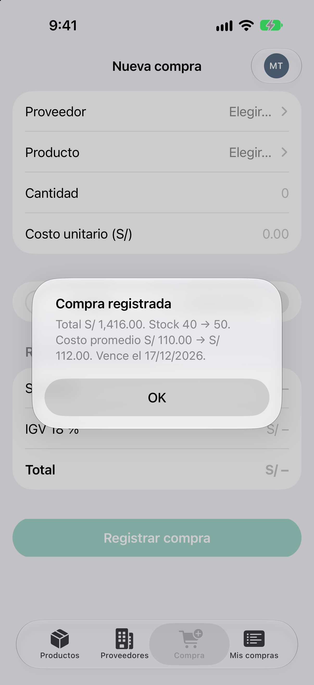
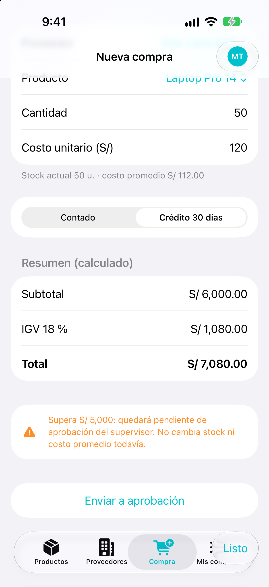
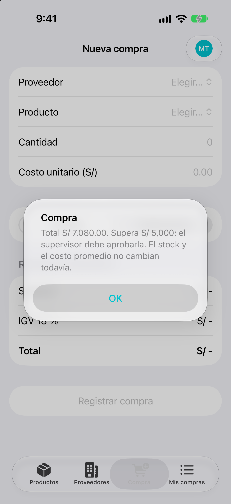

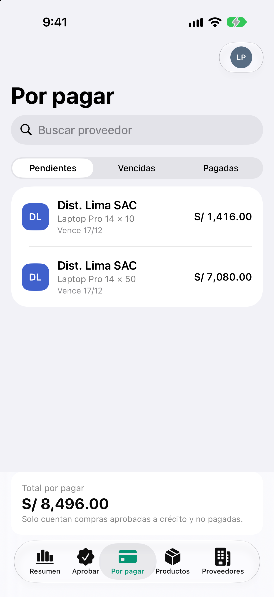
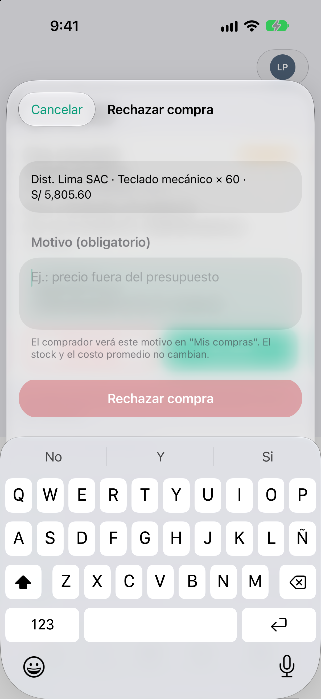
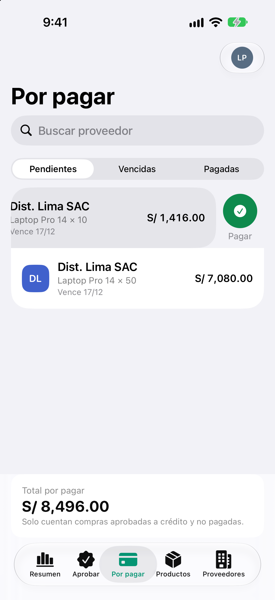

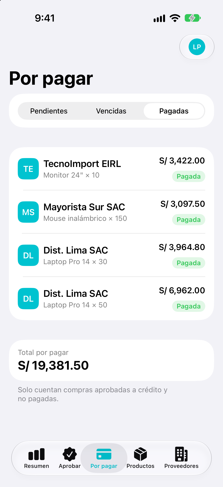
#Predicate por el usuario de la sesión, por lo que nunca aparecen compras de otra persona. Pagar o aprobar está prohibido para el comprador en la lógica..deny); uno sin compras sí. El crédito fiscal del Resumen es la suma del IGV de las compras aprobadas.| Carpeta | Contenido |
|---|---|
Modelos/ | Usuario, Proveedor, Producto, Compra |
Servicios/ | ReglasCompra (negocio), Autenticacion, Sesion, Formato, ModelContainerProvider, DatosDemo |
Tema/ | Colores, avatares, insignias, botones y tarjetas |
Vistas/ | Acceso (B1, B2), Catalogo (B3, B4), Compras (B5, B6), Supervisor (B7, B8, B9), Comun, RaizView |
Verificacion/ | Verificador de los casos de prueba |
Evidencia/ | Capturas y esta ficha |
ai-assisted)El historial sigue Conventional Commits en español, de abajo hacia arriba: proyecto, recursos, datos, lógica, interfaz, navegación, pruebas y documentación.
| # | Commit |
|---|---|
| 1 | chore(project) crear proyecto SwiftUI con SwiftData para el caso B de compras |
| 2 | feat(assets) agregar el ícono y el logo de Compras tomados del enunciado |
| 3 | feat(models) definir Usuario, Proveedor, Producto y Compra con relaciones inversas y regla deny |
| 4–6 | feat(services) reglas de compra, registro y login, formato y contenedor SwiftData, datos de ejemplo |
| 7–15 | feat(views) tema, login y registro (B1, B2), productos (B3), proveedores (B4), compra (B5), mis compras (B6), aprobar (B7), por pagar (B8), resumen (B9) |
| 16 | feat(navigation) mostrar login o pestañas según la sesión y el rol |
| 17 | test(services) verificar los nueve casos de prueba y las reglas deny sin simulador |
| 18 | docs evidencias, ficha técnica y registro de prompts |
apple_lab11_B_Compras.xcodeproj en Xcode y ejecutar en un iPhone del simulador.